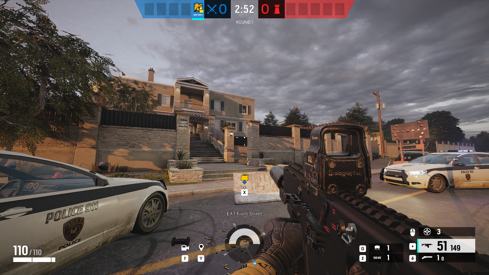
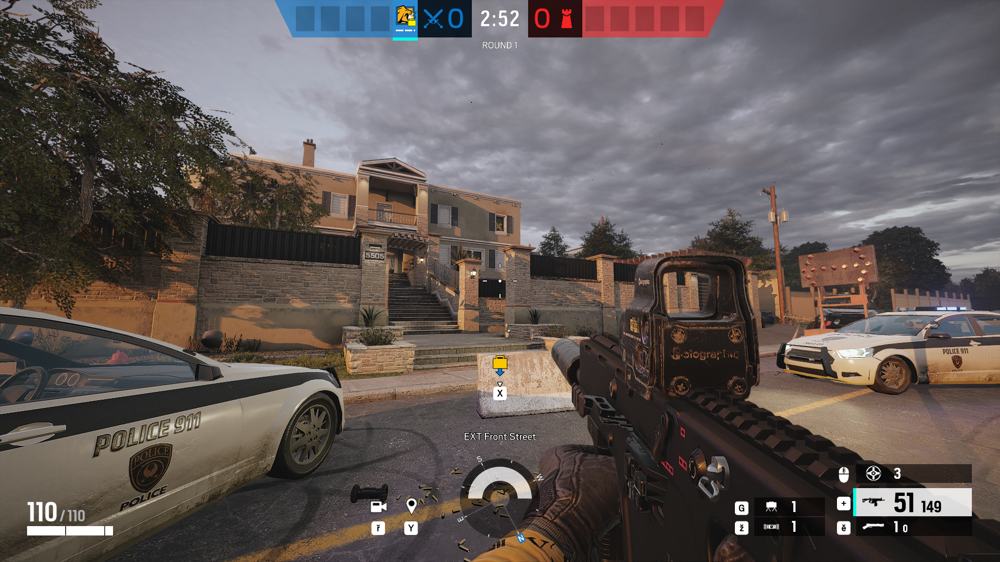
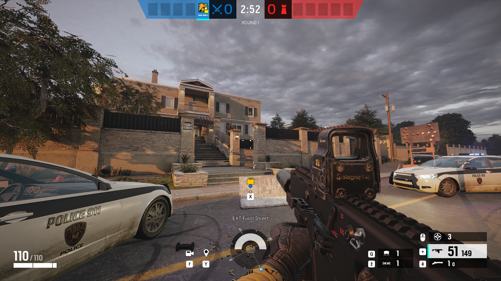

Kellele ei meeldiks oma pingeid maandada virtuaalmaailmas kellegi või millegi laskmisega? Populaarsemad laskmismängud on tavaliselt esimeses isikus ehk mängija näeb toimuvat läbi mängukarakteri silmade või kolmandas isikus ehk mängija näeb karakterit ennast ja "hõljub" temast natuke kõrgemal. (Tegelikult saaks öelda, et enamik mänge, mida me siin tutvustame, on laskmismängud)
CS:GO on tasuta ja kõige kauem olnud populaarseim esimeses isikus tulistamismitmikmäng, mis on videomängude netipoes Steam esimesel kohal. Mängus saab osaleda matšides, milles on omakorda mitu raundi. Mängus on kaks tiimi: terroristid ja eriüksuslased. Et matši võita, peab üks tiim oma eesmärgi saavutama või vastastiimiliikmed maha võtma. Populaarseim mängurežiim on pomm, kus terroristide eesmärk on teatud punktile pomm paigaldada ja eriüksuslaste eesmärk on see pomm kahjutuks teha.
Tegu on küll Tom Clancy's seeriaga, aga just seda mängu tasub siin eraldi välja tuua. R6 on 5 vs 5 mitmikmäng, mis oli oma algusaastatel väga taktikaline esimeses isikus tulistamismäng. Sarnaselt mänguga CSGO on seal matšid ja raundid ning mängurežiimideks pomm, pantvangi päästmine ja punkti omistamine. R6-s on palju karaktereid ja igal tegelasel on oma eriline võime, mis muudab iga matši ja sellega kaasneva mänguviisi erinevaks. Kaitsjatiim tugevdab seinu ja sätib valmis lõkse ning samal ajal kogub ründajatiim droonidega infot. Pärast mida on ründajatel ajapiirang, mil nad peavad eesmärgi saavutama või kaitsjad elimineerima. Ning kaitsjad hoiavad neid tagasi nii kaua kui võimalik. Mängu on aga muudetud läbi aastate nii palju, et mängijad ei pea seda enam taktikaliseks, vaid pigem kangelastulistamismänguks, st mäng sarnaneb rohkem fantaasiale kui päriselule. Sellegipoolest uuendatakse mängu 4 korda aastas uute laiendustega.

Rainbow Six Siege vanasti ja nüüd (liigu hiirega pildile)
Rohkem infot siit!"Battlefield" on esimeses (ja vahest kolmandas) isikus tulistamisvideomängude sari, mille mängud leiavad aset I ja II maailmasõja ajal ning ka tänapäeval. Mängurežiim on sõjaline mitmikmäng, kus kokku kahe tiimi peale on 64 mängijat. Pooled on ühe riigi sõdurid ja teised mõne teise riigi omad. "Battlefield" on kindlasti üks visuaalselt rabavamaid mänge, simuleerides elutruult lahinguid, mis on toimunud. Mängu relvad ja masinad sarnanevad päriselu omadega olenevalt sõjaajale.


Mänguseerias on kokku juba 19 videomängu. Mängud on esimeses isikus ja sisaldavad narratiivset üksikmängu ning tiimidevahelist simulatsioonsõjalist mitmikmängu. Algusaastatel keskendus mänguseeria II maailmasõjale ja külmale sõjale, aga järgnevalt hakati rohkem keskenduma lähitulevikule ja futurislikule tehnoloogiale.


"Overwatch 2" on jätk esimesele, mille mitmikmängu serverid hiljuti kinni pandi. "Overwatch 2" on küll 5 vs 5 tiimidevaheline võitlusmäng, aga võrreldes teiste laskmismängude ei sisalda mäng palju vägivalda ja on väga värviline. Tegu on kangelaspõhise mitmikmänguga, kus igal tegelasel on oma võimed. Mängijal on võimalus valida tegelaste vahel, kes kuuluvad ühte kolmest grupist, kas tank, damage või healer. Matšide eesmärgiks on tiimiga punkti ülevõtmine ja hoidmine, objekti liigutamine või liigutamise takistamine ja palju muud.